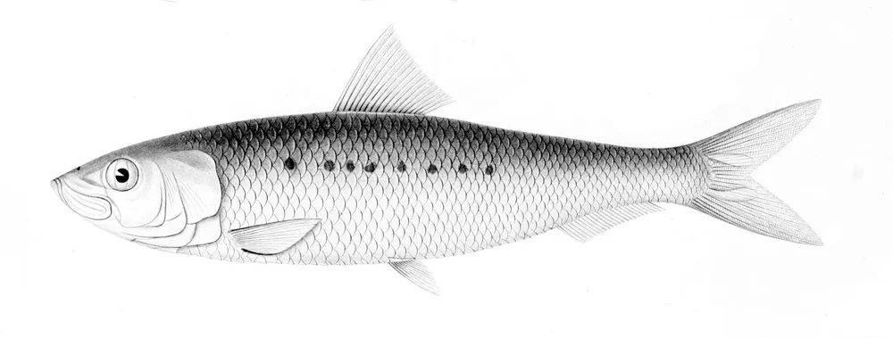
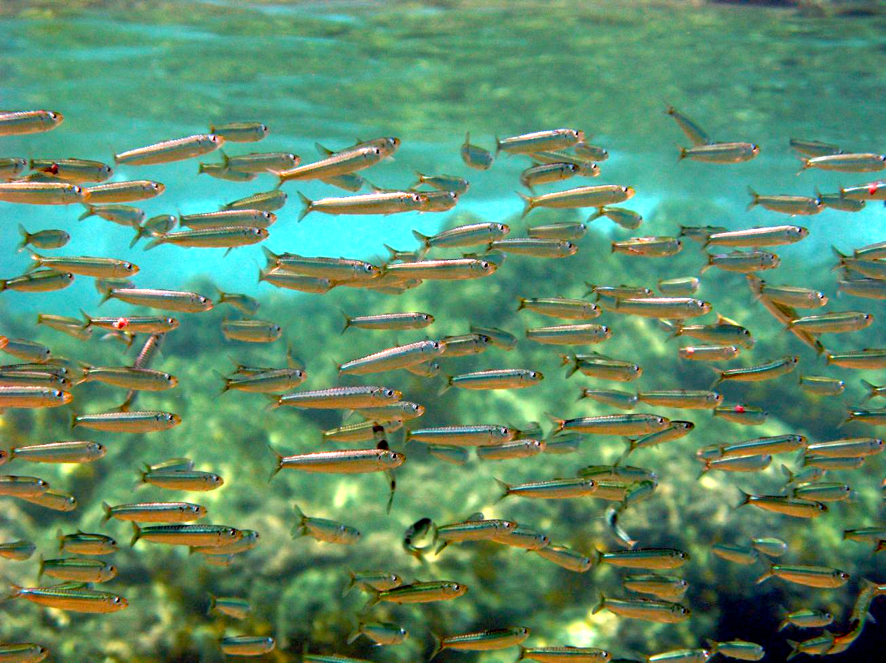
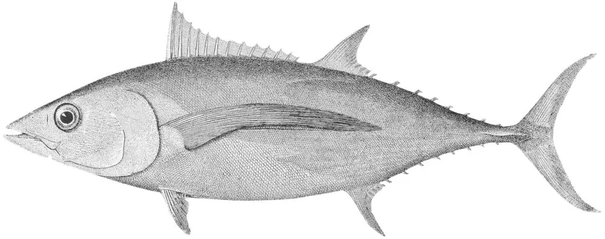
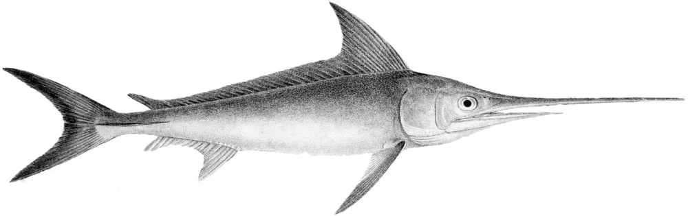
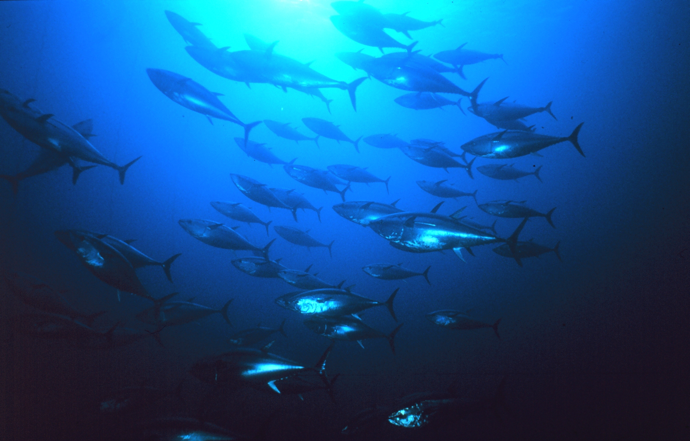
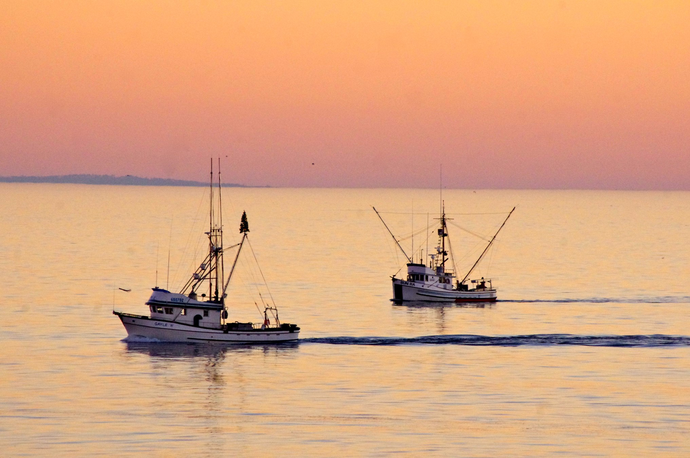

Climate change and fisheries
Climate change is driving shifts in the spatial distribution and productivity of marine animals. These processes are reorganizing ocean food webs, and leading to new species interactions. Fishers and fisheries managers are thus responding to a rapidly changing seascape of new risks, and new opportunities. However, existing management structures are often not designed for flexibility and adaptation. If they lag behind the emergence of novel environmental and economic conditions, fisher livelihoods and fishing communities can be impacted. Effectively responding to changing ecosystems and fisheries in the California Current System will require research to serve management needs, and science tailored to fishing communities. Future Seas is linking ecological projections and modeling frameworks explicitly to groups of species covered by Fishery Management Plans. Within these management plans, species are categorized into ecologically similar groups. Future Seas research is focused on three of these groups: coastal pelagic species, highly migratory species, and groundfish.
Coastal Pelagic Species
Coastal pelagic species include Pacific sardine (Sardinops sagax), northern anchovy (Engraulis mordax), and market squid (Doryteuthis opalescens). These animals provide an abundant prey base for larger predators such as tunas, billfishes, marine mammals, seabirds, sharks, and groundfish. The recruitment and abundance of coastal pelagic species in the California Current System can change rapidly from year-to-year, responding to shifts in ocean conditions. Historical studies proposed that warm conditions in the region favored sardine, while cooler temperature favored anchovy. However, record warm temperatures during the 2014-2016 North Pacific marine heatwave did not reverse the collapse of the northern subpopulation of sardine, and instead marked the beginning of a rapid increase in anchovy. The spatial distribution of coastal pelagic species also responds rapidly to environmental conditions. During the 2014-2016 heatwave, market squid expanded their range into the Gulf of Alaska, and sardine spawning grounds shifted hundreds of kilometers northwards. These redistributions can change the forage base available to top predators, as well as impacting fishing opportunities.
Coastal pelagic species support several important commercial fisheries. Fishers targeting coastal pelagic species generally rely on a portfolio of species, which varies regionally and temporally with species availability. The fleet targeting these species is one of the largest and most diverse in California, with the main targets being market squid, sardine, mackerel and anchovy, although the sardine fishery has been closed since 2015 due to low biomass. In 2022, coastal pelagic species accounted for 15.5% of total West Coast landings by weight, and generated $90.6 million in ex-vessel revenue. Key issues for the fishery include stabilizing catch from year to year, promoting efficiency and profitability given the high temporal variability in species availability and portfolio composition, and maintaining adequate forage for predators. As coastal pelagic species support both larger predators and commercial fisheries, fisheries managers balance the needs of fishing fleets with those of the broader ecosystem.

(Sardinops sagax)

Highly Migratory Species

(Thunnus alalunga)

(Xiphias gladius)

Highly migratory species include tunas, such as Pacific bluefin tuna (Thunnus orientalis) and albacore tuna (T. alalunga), billfishes, such as swordfish (Xiphias gladius) and sharks. These species can migrate very large distances as part of their life cycles. For example, bluefin tuna and albacore spawn in the western North Pacific, but a portion of juveniles migrate to the California Current System to forage when they are about 1 – 3 years old. Albacore also migrate seasonally between the California Current System and the offshore North Pacific. Highly migratory species are particularly adept at using their ocean habitat across three dimensions, and can dive to several hundred meters depth to target mesopelagic prey. They often specialize on prey such as anchovy and sardine when those resources are abundant, but can rapidly switch to other prey such as cephalopods or crustaceans in response to changing availability.
Albacore support the most lucrative fishery for a highly migratory species off the US West Coast. The commercial albacore fishery operates primarily out of Pacific Northwest ports in Oregon and Washington, using hook-and-line or troll gear. Importantly, the US and Canadian albacore fisheries are currently open-access, providing valuable “insurance” as other fisheries (e.g., for salmon and crab) have become more volatile or less accessible. In 2023, albacore landings totaled 3,298 metric tons, generating $9.6 million in ex-vessel revenue. Swordfish were historically targeted by a drift gillnet fishery operating off California, but other gears (such as deep-set buoy gear) are now being phased in. In 2023, swordfish landings totaled 97 metric tons, worth $874,928 in ex-vessel revenue. Landings and revenue of bluefin tuna are still low compared to albacore and swordfish, but this species has become more abundant in the southern California Current over the past 10 years, potentially providing more fishing opportunities for both commercial and recreational fishers.
Highly migratory species are managed internationally by the Inter-American Tropical Tuna Commission and the Western Central Pacific Fisheries Council, and along the US West Coast by the Pacific Fishery Management Council. Due to their mobility, highly migratory species can respond rapidly to climate-driven changes in thermal habitat or prey resources. They can therefore move across static management boundaries, potentially challenging existing fisheries management agreements.
Groundfish
The term “groundfish” encompasses more than 90 species of fish living on or near the seafloor, such as flatfish (e.g., Dover sole, Microstomus pacificus), sablefish (Anoplopoma fimbria), and deep dwelling demersal rockfishes (Sebastes spp.). We categorize Pacific hake (Merluccius productus) as groundfish as well, though as a ‘midwater’ species they are found from the seafloor up to the middle of the water column. Hake prey on other groundfish species, but are also preyed upon by piscivorous species like lingcod (Ophiodon elongatus) and Humboldt squid (Dosidicus gigas). Sablefish also act as both predator and prey during different portions of their lifecycle, and cannibalism between adults and juveniles has been observed. Juvenile sablefish feed primarily on copepods, while adult sablefish feed on a diverse set of prey that includes other fishes, cephalopods, and crustaceans. The spatial distribution of groundfish is primarily associated with environmental conditions near the sea-floor, such as bottom temperature,bottom oxygen, and sediment or rocky habitat. Although they are not as mobile as highly migratory species (e.g., tunas), hake have been observed to move from northern California to around Vancouver Island in spring and summer, and may migrate further north in warmer years.
Pacific hake support one of the largest and most valuable groundfish fisheries on the West Coast, with a total value of > $300 million to the US. (Malick et al. 2020). They are targeted primarily by mid-water trawl gear. Hake have been managed under the international Pacific Hake/Whiting treaty since 2012, and a bilateral agreement has governed the US and Canada catches of hake since 2005. Sablefish are also highly valuable commercially. Management measures include seasons, size limits, trip-limits, and a complex permit system. Climate change may already be impacting sablefish distribution and availability, and in the future, they may shift into deeper offshore waters, becoming less accessible to fishing fleets. As temperatures warm, some groundfish may be pushed further north, increasing potential for transboundary issues and conflicts.
